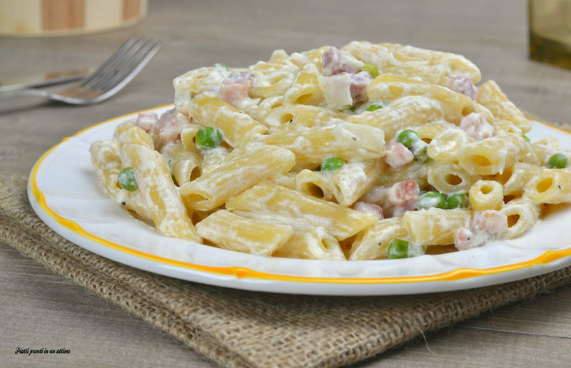

Pasta alle 3 P

Rigatoni alle 3 P (Prosciutto, Piselli, Panna
La pasta alle 3 p è un piatto tipico degli anni 80 che si presta perfettamente a pranzi e cene tra amici e parenti.
Il suo alto contenuto di proteine è l'ideale per la salute, anche dei palestrati.
Ingredients
- Pasta a piacimento
- Panna
- Prosciutto
- Piselli
Steps
- Innanzitutto far bollire una pentola d'acqua e poi cuocerci la pasta
- Fare soffriggere bene il prosciutto in padella
- Aggiungere i piselli
- Aggiungere la panna a quanto basta